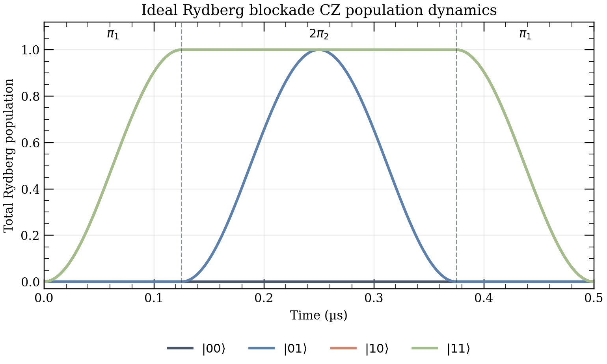
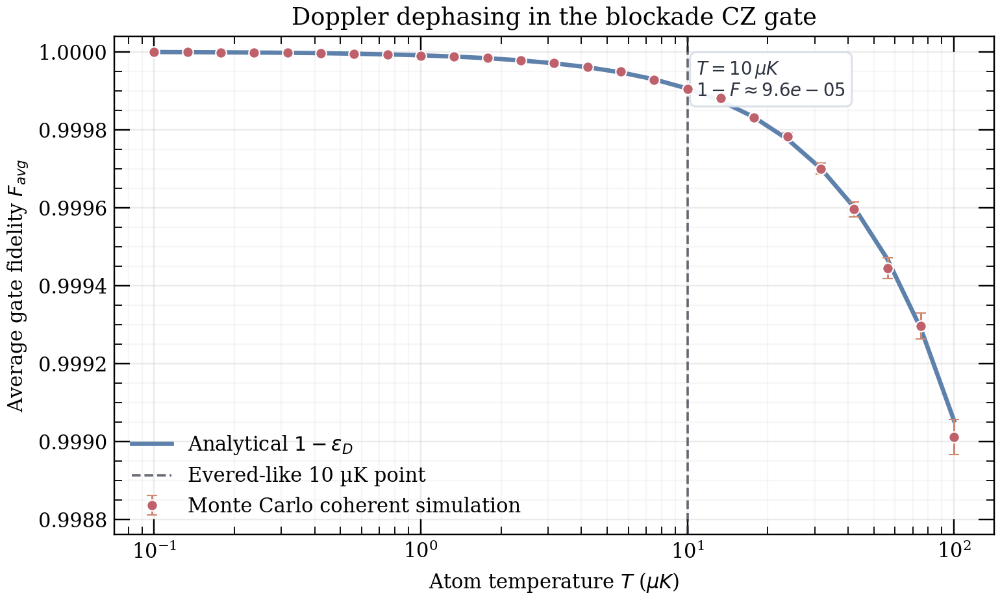

A huge atom, briefly
A Rydberg state has a large principal quantum number $n$. For ⁸⁷Rb we use $|r\rangle = |70S_{1/2}\rangle$. Its orbital radius scales roughly as $n^2$, so nearby Rydberg atoms interact much more strongly than ground-state atoms.
Two rubidium atoms, one auxiliary Rydberg level, and a blockade interaction turn single-atom laser pulses into a two-qubit controlled phase. This page establishes the reader-facing scaffold and the ideal-gate baseline that every error budget section will build on.
If one atom is already in a Rydberg state, it shifts the other atom's Rydberg transition out of resonance. That conditional shift is the whole machine: it makes one branch of the wavefunction follow a different path and acquire the controlled phase.
A Rydberg CZ gate is a controlled phase gate implemented by temporarily promoting one or both atoms to a highly excited state. The qubit begins and ends in ordinary ground hyperfine states; the Rydberg state is only a temporary workbench.
A Rydberg state has a large principal quantum number $n$. For ⁸⁷Rb we use $|r\rangle = |70S_{1/2}\rangle$. Its orbital radius scales roughly as $n^2$, so nearby Rydberg atoms interact much more strongly than ground-state atoms.
The computational state $|0\rangle$ is dark: it does not couple to the Rydberg excitation lasers. The computational state $|1\rangle$ is represented here by a laser-coupled ground state $|g\rangle$. The auxiliary state $|r\rangle$ is not part of the final qubit.
Rubidium is driven from $5S$ toward $70S$ using a two-photon path through $5P_{3/2}$: a 780 nm lower leg and a 480 nm upper leg. Counter-propagating beams give a smaller effective wavevector, which helps suppress Doppler dephasing later.
When atom 1 is in $|r\rangle$, it shifts atom 2's Rydberg level by an interaction energy $U$. If $U \gg \Omega$, where $\Omega$ is the Rabi frequency, atom 2 is effectively off-resonant and cannot be excited. That is the blockade regime.
The dominant Rydberg interaction for the chosen $S$ state is a van der Waals interaction. Up to the sign convention for $C_6$, the blockade strength is the magnitude of that shift:
The target two-qubit operation is a controlled-$Z$ gate. It leaves $|00\rangle$, $|01\rangle$, and $|10\rangle$ unchanged, and flips the phase of $|11\rangle$ by $\pi$:
| Input state | Output state | Meaning |
|---|---|---|
| $|00\rangle$ | $+|00\rangle$ | Both qubits are dark. |
| $|01\rangle$ | $+|01\rangle$ | No controlled phase because qubit 1 is 0. |
| $|10\rangle$ | $+|10\rangle$ | No controlled phase because qubit 2 is 0. |
| $|11\rangle$ | $-|11\rangle$ | Both qubits are 1, so the branch receives a $\pi$ phase. |
A resonant Rabi pulse flips $|g\rangle \leftrightarrow |r\rangle$ at angular rate $\Omega$. But if the target Rydberg level is shifted by $U$, the same laser is detuned. The excitation probability under a detuned drive is suppressed roughly by $\Omega^2/(\Omega^2+U^2)$. In the blockade regime $U \gg \Omega$, the blocked branch stays put while the unblocked branch completes its rotation.
The ideal gate is deliberately austere: no decay, no Doppler shift, no amplitude noise, and perfect blockade. This is the sanity check. If the ideal model does not produce a unit-fidelity CZ up to local $Z$ phases, the error analysis downstream is just numerology in a lab coat.
If atom 1 is in $|1\rangle \equiv |g\rangle$, the pulse transfers it to $|r\rangle$. If atom 1 is in $|0\rangle$, it is dark and nothing happens.
If atom 1 is not Rydberg, atom 2 performs a full $|g\rangle \rightarrow |r\rangle \rightarrow |g\rangle$ cycle and acquires the usual $-1$ phase. If atom 1 is already in $|r\rangle$, atom 2 is blockaded and does not rotate.
The final pulse returns any population in atom 1's Rydberg level to the computational state $|1\rangle$. The total pulse duration is $t_g = 4\pi/\Omega$.
| Input | Pulse path | Raw phase | After local Z correction |
|---|---|---|---|
| $|00\rangle$ | Both atoms are dark. | $+1$ | $+1$ |
| $|01\rangle$ | Atom 2 completes a $2\pi$ rotation. | $-1$ | $+1$ |
| $|10\rangle$ | Atom 1 completes the two $\pi$ pulses; atom 2 is dark. | $-1$ | $+1$ |
| $|11\rangle$ | Atom 1 goes to $|r\rangle$; atom 2's $2\pi$ pulse is blocked. | $-1$ | $-1$ |

, |01>, |10>, and |11>." onerror="showPopulationFallback(this)">Generated PNG not found at ../figures/population_dynamics.png. Showing an inline schematic fallback; run the ideal-figure script to regenerate the publication PNG.
With local $Z$ phases accounted for, the ideal sequence matches CZ to numerical precision: infidelity below $10^{-10}$.
The three pulses have areas $\pi$, $2\pi$, and $\pi$. Faster $\Omega$ shortens the gate, but later sections will show which errors fight back.
This effective occupation time sets the leading decay-error scale once finite Rydberg lifetime is included.
For a coherent two-qubit process, the average gate fidelity is computed from $M=U_{\mathrm{target}}^\dagger U_{\mathrm{actual}}$ with Hilbert-space dimension $d=4$:
Global phase drops out. The displayed ideal value also removes the known local $Z$ phases, because those are single-qubit frame choices rather than entangling errors.
Two single-qubit $Z$ operations have diagonal $Z_1\otimes Z_2=\mathrm{diag}(1,-1,-1,1)$. Multiplying this by the canonical CZ gives
Local phases can be calibrated away in software or absorbed into later pulses. The nonlocal invariant is the inclusion-exclusion phase $\phi_{11}-\phi_{10}-\phi_{01}+\phi_{00}$, and here it equals $\pi$.
The state $|r\rangle = |70S_{1/2}\rangle$ is a highly excited rubidium level. It eventually emits a photon and falls back toward lower states. In this first error slice we use the narrow model requested for the gate budget: each atom has a Lindblad decay channel $L=\sqrt{\Gamma}\,|g\rangle\langle r|$, so a decay event returns the atom to the laser-coupled ground state and destroys the coherent phase history.
The important number is not the full gate duration $4\pi/\Omega$, but the integrated Rydberg population during the three pulses. For the ideal blockade sequence, that effective exposure time is
Here $\Gamma=1/\tau$ is the Rydberg decay rate and $\Omega$ is the angular Rabi frequency. The project baseline uses the ARC radiative lifetime for the $|70S_{1/2}\rangle$ state, about $374\,\mu\mathrm{s}$, with $\Omega/2\pi=4\,\mathrm{MHz}$. That gives a leading decay error of roughly $5.9\times10^{-4}$ before any other error source is turned on.
For weak decay, treat spontaneous emission as a rare quantum jump. The probability of a jump is the decay rate times the time-integrated Rydberg population: $p_{\mathrm{jump}}\simeq\Gamma\int P_r(t)dt$. Averaging over the four computational branches of the $\pi$–$2\pi$–$\pi$ protocol gives the standard blockade-gate exposure $T_R=7\pi/(4\Omega)$, so the leading infidelity is linear in $\Gamma$ and inversely proportional to the Rabi frequency.
The numerical simulation does not assume the formula. It evolves the density matrix with the same three pulses and the two collapse operators, reconstructs the projected two-qubit channel, and evaluates the Pedersen average gate fidelity after the known local-$Z$ phase correction.

Generated PNG not found at ../figures/fidelity_vs_decay_rate.png. Run scripts/run_sweeps.py and scripts/generate_figures.py to regenerate the numerical decay sweep and figure.
Faster gates and longer-lived Rydberg states reduce this error directly.
For the current ARC radiative-lifetime convention, decay is small but not imaginary.
This error dominates when the gate is slow or the chosen Rydberg state has a short lifetime; it is the tax paid for spending real time in $|r\rangle$.
Even laser-cooled atoms move. If an atom has velocity $v$ along the excitation axis, the two-photon drive is Doppler shifted by $\delta = k_{\mathrm{eff}} v$. In one experimental shot this is a fixed detuning, so the evolution is coherent; the dephasing appears only after averaging many shots with different thermal velocities.
For the counter-propagating 780 nm and 480 nm rubidium beams used here, the effective wavevector is small compared with a single optical wavevector:
The numerical model samples independent axial velocities for the two atoms from a Maxwell-Boltzmann distribution, runs the same $\pi$–$2\pi$–$\pi$ sequence with the sampled detunings, and averages the Pedersen fidelity over the ensemble. No Lindblad operator is used, because Doppler motion is classical shot-to-shot noise in this model, not spontaneous emission during a shot.
For a detuned two-level pulse, the generalized Rabi frequency is $\Omega_R=\sqrt{\Omega^2+\delta^2}$. Expanding the detuned pulse propagator for $|\delta|\ll\Omega$ shows that the leading correction to a resonant pulse is quadratic in $\delta/\Omega$ after the symmetric velocity distribution removes the linear term.
The one-dimensional thermal average gives $\langle v^2\rangle=k_B T/m$, hence $\langle\delta^2\rangle=k_{\mathrm{eff}}^2 k_B T/m$. For the $\pi$–$2\pi$–$\pi$ blockade sequence, the detuned-Rabi sensitivity contributes the standard protocol factor $\pi^2/4$, giving the formula above.

Generated PNG not found at ../figures/fidelity_vs_temperature.png. Run scripts/run_sweeps.py and scripts/generate_figures.py to regenerate the Doppler Monte Carlo sweep and figure.
Colder atoms and faster Rabi pulses suppress Doppler dephasing quadratically through $\delta/\Omega$.
At $T=10\,\mu\mathrm{K}$ and $\Omega/2\pi=4\,\mathrm{MHz}$, Doppler is visible but smaller than the leading decay estimate in this model.
This error dominates when atoms are warm, gates are slow, or the excitation geometry has a large effective wavevector.
Ask about this passage